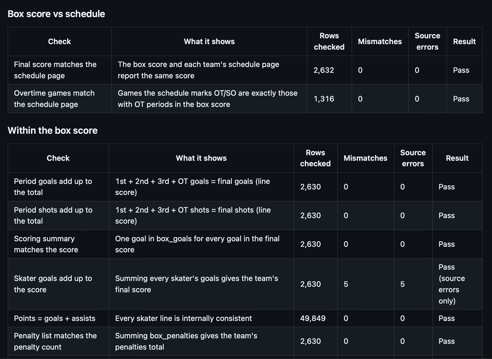
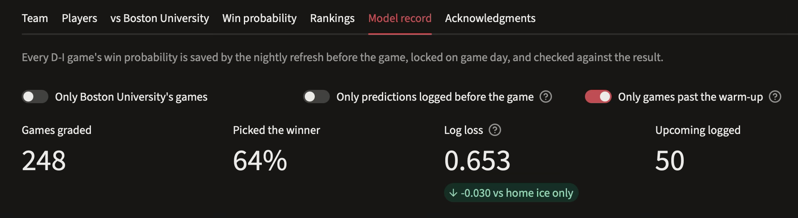
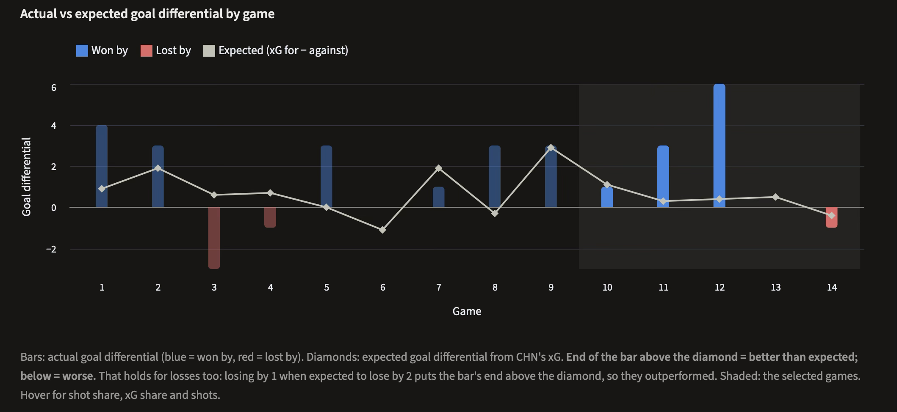
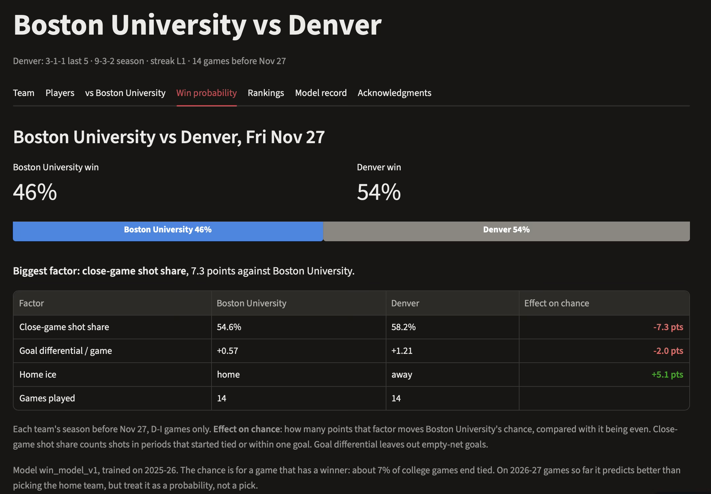

Introduction
College hockey is one of the hardest sports to predict. Rosters turn over every year, there are 62 Division I teams spread across six conferences, and a single hot goaltender can steal a weekend series. Even the best team in the country loses often enough that a confident "pick" is usually a mistake. That makes it a good problem for a probabilistic model: the useful question is not "who will win?" but "how likely is each team to win, and can those probabilities be trusted?"
CHIRP (College Hockey Intelligence & Reporting Platform) is my answer to that question. It started as a scouting tool for Boston University's opponents and grew into a full pipeline: it scrapes every D-I game, validates and stores the data in PostgreSQL, serves it through an API, and feeds a win-probability model that logs its predictions before each game and grades itself afterward. The heart of the project is the model, but a model is only as good as the data under it, so this write-up follows the work in the order it happened.
From Web Pages to a Database
No public API offers complete college hockey data, so the first job was collecting it. With the permission of College Hockey News (CHN), I wrote scrapers for two kinds of pages: each team's schedule page and each game's box score. Together they cover goals and shots by period, special teams, every skater and goalie line, every goal and every penalty. Across the 2025-26 season that was 1,148 games, about 43,000 skater lines and 6,700 goals.
The scrapers are deliberately polite. They check robots.txt before every request, wait two seconds between pages, and save each page so a finished box score is never downloaded twice.
Scraped data is only useful if it is right, so the pipeline treats validation as a gate. Sixteen exact checks compare the data against itself. Period goals must add up to the final score. Every skater's points must equal goals plus assists. Most usefully, the score in each box score must match the score on both teams' schedule pages, which are separate pages and catch both scraping and parsing errors. If anything fails without an explanation, the database is not touched and keeps serving the last good data. The checks found five rows where CHN's own pages disagree with each other; each one is documented with a link rather than silently "fixed."

The subtlest data problem was identity. Players change how their names are written ("Joseph" becomes "JJ"), transfer between schools, and appear under two spellings on the same team. I built a stable ID system that links players across seasons: 1,786 players are matched through CHN's own player IDs, and another 177 transfers are matched by name history when a player's record ends at one school and begins at another. Those IDs make season-over-season analysis possible, and they matter for the next version of the model.
Serving the Data: PostgreSQL and an API
The validated data loads into PostgreSQL as a full refresh in a single transaction. Anyone reading the database sees either the old data or the new data, never half of each. The database is split into schemas by purpose: hockey holds the games and players and is rebuilt on every load, features holds views that compute per-game team and player rows, and predictions holds the prediction log, which no load is allowed to touch.
On top of the database sits a FastAPI service with 21 read-only endpoints: teams, games, box scores, players, league leaders, recent form, win probabilities, rankings and the prediction log. Every connection is read-only and every request needs an API key. The dashboard never queries the database directly; it only talks to the API. That separation kept the modeling code, the data and the interface independent, so I could change one without breaking the others.

Defining the Prediction Problem
The target is simple: did the home team win? A few rules make it well defined:
- Ties are excluded. About 6.9% of games end tied (shootouts count as ties), so the model gives the chance of winning a game that has a winner.
- Only D-I vs. D-I games count, because CHN records exhibition opponents only partly.
- Neutral sites get no home edge. Two evenly matched teams at a neutral rink are exactly 50/50.
The most important rule is about time. Every feature for a game is computed only from games played before that game's date. It sounds obvious, but it is easy to break: a season average that includes the game being predicted leaks the answer into the input. The feature pipeline enforces the cut-off for every game, and the dashboard uses the same rule when it shows a team "as of" a past date.
Choosing Features Without Fooling Myself
With only one full season (about 1,000 games), the real risk was not a bad model but a lucky one: trying enough feature combinations until one happens to fit the noise. To guard against that, I wrote the rules for each step of the analysis before running it, and I worked through the EDA in eight notebooks.
Validation used time-ordered cross-validation (TimeSeriesSplit, five folds), so the model is always trained on earlier games and tested on later ones, the same way it is used in practice. Features were chosen on folds 1–4, and fold 5, the end of the season including the conference and NCAA tournaments, was held back to confirm the final choice once. Features were added by forward selection, and a feature group was kept only if it improved log loss by at least 0.001 and did so in at least three of four folds.
The 0.001 threshold was added after the first run, which kept "percentage of games scoring first" for a gain of 0.0001. That is noise. I applied the threshold to every group, confirmed it changed only that one decision, and documented the change rather than quietly rerunning.
What Actually Predicts a Win
The most useful step was separating skill from luck. I split each team's season into odd and even numbered games and asked which statistics repeat. A stat that is mostly skill should look similar in both odd and even games; a stat that is mostly luck should not.
- Shot-based stats are skill. Close-game shot share (the share of shots in periods that started tied or within one goal) correlated at r = 0.81 between a team's odd and even games, and it becomes readable within four to eight games.
- Shooting percentage, PDO and record in one-goal games are luck. They barely repeat, and they are exactly the numbers that make a team look better or worse than it is.
- Special teams and save percentage sit in between. They decide individual games but take a full season to stabilize.
That explained the next result: season-to-date numbers beat recent form for every statistic. "Last five games" feels like it should matter, but it mostly measures luck.

After forward selection, only two inputs survived. Close-game shot share does most of the work, and goal differential (excluding empty-net goals) adds a small but consistent amount on top. Everything else was tested and rejected: recent form, special teams, save percentage, streaks, rest days and back-to-backs. Strength of schedule came closest, with a gain of +0.0016, but it improved only two of four folds, too inconsistent to trust with one season of data. It is the first thing I plan to revisit.
The Model
The final model is an L2-regularized logistic regression:
Home win probability = logistic(close-game shot share + goal differential + home ice), each team's season so far, home minus away.
I chose logistic regression on purpose. With about 1,000 games, a more flexible model would mostly learn noise, and every coefficient here can be read directly:
- Close-game shot share: each standard deviation of advantage multiplies the odds of winning by 1.97×.
- Goal differential: each standard deviation multiplies the odds by 1.24×.
- Home ice: an evenly matched home team wins 55.1% of the time.
One design detail matters. The model has no separate intercept; instead the home edge is multiplied by a home-ice switch that is 1 for a home game and 0 at a neutral site. The inputs are scaled but not centered, so zero still means "evenly matched." That gives neutral-site games exactly 50/50 by construction, and it lets every team receive a single neutral-ice rating, which powers the rankings.
Testing It Honestly
After the EDA, I froze the model: its coefficients are saved in a version-controlled model card, and the live code is tested to reproduce the frozen model exactly. Then I tested it on the 2026-27 season, games it had never seen.
On the held-back end of 2025-26, the model reached a log loss of 0.627, against 0.639 for a "better record wins" baseline and 0.675 for always predicting the home win rate. On the 2026-27 season, which it had never seen, the live prediction log shows 248 graded games, 64% of winners picked, and a log loss of 0.653 against 0.683 for home ice alone.

Those accuracy numbers look modest, and that is the point. College hockey games are closer to coin flips than they appear, and a model that picks 80% of winners would be overfitting or cheating. I also report the uncertainty honestly: the edge over the baseline is positive, but a few hundred games is not enough to call it settled. The model needs the rest of the season to prove itself.
Are the Probabilities Honest?
A win probability is only useful if it means what it says. When the model calls a team a 70% favorite, that team should win about 70% of the time. To check this, the platform keeps a prediction log. Every night it records each upcoming game's probability, updates it until game day, and then locks it. After the game, the result is attached. Because predictions are written before the games happen, the record cannot be quietly improved after the fact.
The Model record page groups logged games by the favorite's predicted chance and plots how often those favorites actually won. Points on the diagonal mean honest probabilities.

So far, the model is well calibrated in the middle range. Favorites in the 65–80% range have won somewhat less often than predicted, a hint of overconfidence, but each group holds only 30–60 games, where luck alone moves a point by about seven percentage points. I am watching it rather than correcting it: recalibrating on a few dozen games would be its own form of overfitting.
Putting It to Work: The Dashboard
The model and data come together in a Streamlit dashboard. The sidebar sets the context for every page: your team (Boston University by default), the team to scout (its next opponent by default), an "only games before" date for seeing a team as it looked at any point in the season, and how many recent games to examine.
- Team: the scouted team over its last N games beside its season so far, across 20 statistics colored better or worse, plus actual vs. expected goal differential by game. This is the starting point for a scouting report.
- Players: skater and goalie lines over the same games, with season numbers alongside and the likely starting goalie. Use it to find who is driving a team's recent results.
- vs. your team: both teams side by side on every stat, plus this season's meetings. This is the matchup page.
- Win probability: your team's chance against the scouted opponent, or any two teams at a venue you choose, with a breakdown of what drives the number.
- Rankings: a model "poll" that ranks every team by its chance to beat an average team on neutral ice, with movement since last week. It is a useful counterweight to records built against weak schedules.
- Model record: the prediction log, accuracy, log loss and the calibration chart, so visitors can judge the model for themselves.



Running Itself
The final piece was making the platform maintain itself at no cost. Every morning a GitHub Actions job runs the full pipeline (scrape, validate, load, predict, back up) against a temporary database and commits the results to a private data repository. The data stays private there, as the data-use terms require. If validation fails, nothing is committed, so the site keeps the last good data. The public app on Streamlit Community Cloud downloads the latest data with a read-only token, starts its own private database and API inside the app, and refreshes itself within minutes of each nightly run.
Conclusion
CHIRP showed me that most of the work in an applied machine learning project happens before the model: collecting data politely, validating it until it can be trusted, and giving it a stable structure. The modeling lesson was restraint. With one season of data, the most valuable decisions were the features I rejected, the rules I set before looking at results, and the decision to freeze the model and let it be judged on games it had never seen.
The next step is model v2, planned for the 2027-28 season. It will carry each team's rating over from the previous season and let it fade as new games are played, which should fix the model's weakest stretch: the first few weeks of a season, before teams have built up any history. Until then, v1 stays frozen and keeps logging its predictions, so v2 will have an honest record to beat.
Full project available on GitHub. Live at chirp-hockey.streamlit.app.